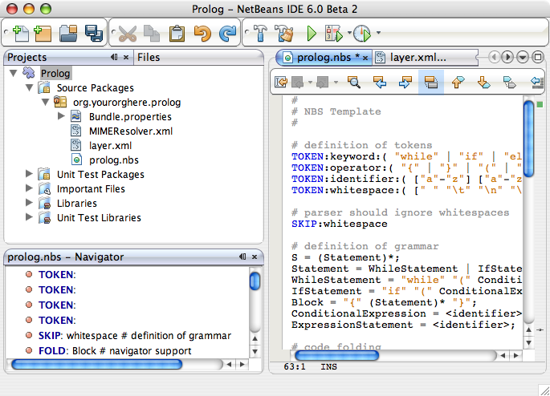
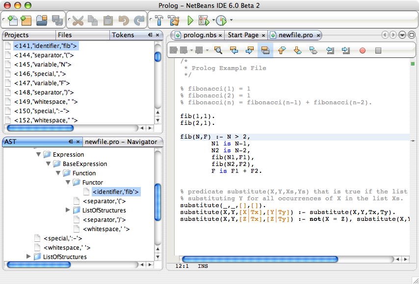

Apache NetBeans
Apache NetBeansLatest release
NetBeans Platform Schliemann Tutorial
| This tutorial needs a review. You can edit it in GitHub following these contribution guidelines. |
Welcome to the NetBeans Platform Schliemann tutorial. Schliemann is a project that allows you to define a programming language and integrate it to NetBeans IDE.
This tutorial shows how to add Prolog support to the NetBeans Editor. At the end of it, your prolog files in NetBeans IDE will look like that:

Contents
Prerequisite Knowledge
You are neither required to know anything about NetBeans Platform develop ment nor Prolog to work on this tutorial. We have choose Prolog as example for Schliemann because of the relative simplicity of its syntax.
Required Software
Since the version 6.0, the Generic Language Framework Studio is part of the distribution of NetBeans IDE. Therefore, the only software needed to go through this tutorial is:
-
The J2SE™ Development Kit (JDK), version 5.0 or compatible ( download the most recent JDK).
-
NetBeans IDE 6.0 ( download).
Setting up the environment
Take the following steps to set up the environment, before to begin to add Prolog support:
-
In the IDE, create a New Project and choose the type Module, in the category NetBeans Modules.
-
Name the project whatever you like (we use the name Prolog, in this tutorial) and finish.
-
Add a new file to your project of type Language Support. You can find this type in the category Module Development. We name this file "prolog", and the extesion is "nbs" (NetBeans Scripting). You will be also asked to provide a Mime Type and a list of extensions. In this tutorial we use
text/x-prologas Mime Type andproas extension.
After those steps you should see the following files and NBS Template in your NetBeans IDE

The file MIMEResolver.xml maps the "pro" file extension to the MIME type text/x-prolog .
Adding Prolog support to NetBeans Editor
The NBS default template contains code for an example language definition. If you compile and install the module now (right click on the project and select "Install/Reload in Development IDE"), after restarting the IDE you can try to create a new file with "pro" extension and paste the following code in it:
while (one) {
two
if (three) {
four
}
}
while (five) {
six
}You will notice syntax coloring, navigator window support, code folding and indentation. Now we begin to add Prolog support, so, the first step is deleting all the content of the file prolog.nbs .
Tokens definition
The lexical analyser is the first part of any language definition. In Schliemann tokens are defined by regular expressions and the keyword TOKEN is used. In the case of Prolog, the tokens that we define are the following:
########################
# Definition of tokens #
########################
# Keywords
TOKEN:keyword:(
"true" | "fail" | "!" | "at_end_of_stream" |
"nl" | "repeat" | "halt" | "is" | "mod" | "rem"
)
TOKEN:special:( "." | ":-" | ",")
# Predefined predicates
TOKEN:function:(
"abolish" | "abort" | "absolute_file_name" | "absolute_file_name" | "access_file" |
"append" | "append" | "apply" | "apropos" | "arg" | "arithmetic_function" | "assert" |
"assert" | "asserta" | "asserta" | "assertz" | "assertz" | "at_halt" | "at_initialization" |
"atom" | "atom_char" | "atom_chars" | "atom_length" | "atom_to_term" | "atomic" |
"autoload" | "bagof" | "between" | "block" | "break" | "call" | "call" | "call_dll_function" |
"call_shared_object_function" | "character_count" | "chdir" | "checklist" | "clause" | "clause" |
"clause_property" | "close" | "close_dde_conversation" | "close_dll" | "close_shared_object" |
"compare" | "compiling" | "compound" | "concat" | "concat_atom" | "consult" | "context_module" |
"convert_time" | "copy_term" | "current_arithmetic_function" | "current_atom" | "current_flag" |
"current_foreign_library" | "current_functor" | "current_input" | "current_key" | "current_module" |
"current_module" | "current_op" | "current_output" | "current_predicate" | "current_stream" |
"dde_current_connection" | "dde_current_service" | "dde_execute" | "dde_register_service" |
"dde_request" | "dde_unregister_service" | "debug" | "debugging" | "default_module" | "delete" |
"delete_file" | "discontiguous" | "display" | "displayq" | "dwim_match" |
"dwim_predicate" | "dynamic" | "ed" | "ed" | "edit" | "edit" | "edit_source" | "ensure_loaded" | "erase" |
"exception" | "exists_directory" | "exists_file" | "exit" | "expand_file_name" |
"expand_file_search_path" | "expand_term" | "explain" | "explain" | "export" | "export_list" |
"feature" | "file_base_name" | "file_directory_name" | "file_search_path" | "fileerrors" |
"findall" | "flag" | "flatten" | "float" | "flush" | "flush_output" | "forall" | "foreign_file" | "format" |
"free_variables" | "functor" | "garbage_collect" | "gensym" | "get" | "get" | "get0" | "get_single_char" |
"get_time" | "getenv" | "ground" | "hash_term" | "help" | "history_depth" | "ignore" | "import" |
"index" | "initialization" | "int_to_atom" | "integer" | "intersection" | "is_absolute_file_name" |
"is_list" | "is_set" | "keysort" | "last" | "leash" | "length" | "library_directory" | "limit_stack" |
"line_count" | "line_position" | "list_to_set" | "listing" | "load_foreign" | "load_foreign_library" |
"make" | "make_fat_filemap" | "make_library_index" | "maplist" | "member" | "merge" | "merge_set" |
"module" | "module_transparent" | "msort" | "multifile" | "name" | "nodebug" | "nonvar" | "noprotocol" |
"nospy" | "nospyall" | "not" | "notrace" | "nth0" | "nth1" | "nth_clause" | "number" | "number_chars" |
"numbervars" | "once" | "op" | "open" | "open_dde_conversation" | "open_null_stream" |
"open_shared_object" | "phrase" | "please" | "plus" | "portray" | "portray_clause" | "predicate_property" |
"predsort" | "preprocessor" | "print" | "profile" | "profile_count" | "profiler" | "prolog" |
"prolog_current_frame" | "prolog_frame_attribute" | "prolog_load_context" | "prolog_skip_level" |
"prolog_to_os_filename" | "prolog_trace_interception" | "prompt1" | "prompt" | "proper_list" | "protocol" |
"protocola" | "protocolling" | "put" | "qcompile" | "qload" | "qsave_program" | "qsave_program" |
"read" | "read_clause" | "read_history" | "read_link" | "read_variables" | "recorda" | "recorded" | "recordz" |
"redefine_system_predicate" | "rename_file" | "require" | "reset_profiler" | "restore" | "retract" |
"retractall" | "reverse" | "same_file" | "save" | "save_program" | "save_program" | "see" | "seeing" | "seen" |
"select" | "set_feature" | "set_input" | "set_output" | "set_tty" | "setarg" | "setenv" | "setof" | "sformat" |
"shell" | "show_profile" | "sleep" | "sort" | "source_file" | "source_location" |"spy" | "stack_parameter" |
"statistics" | "stream_position" | "string" | "string_length" | "string_to_atom" | "string_to_list" |
"style_check" | "sublist" | "subset" | "substring" | "subtract" | "succ" | "swritef" | "tab" | "tell" | "telling" |
"term_expansion" | "term_to_atom" | "time" | "time_file" | "tmp_file" | "told" | "trace" | "tracing" |
"trim_stacks" | "tty_get_capability" | "tty_goto" | "tty_put" | "ttyflush" | "union" | "unknown" |
"unload_foreign_library" | "unsetenv" | "use_module" | "use_module" | "var" | "visible" | "volatile"
"wait_for_input" | "wildcard_match" | "write" | "write_ln" | "writef" | "writeq" |
"abs" | "acos" | "asin" | "atan" | "atan" | "ceil" | "ceiling" | "cos" |
"cputime" | "e" | "exp" | "float" | "float_fractional_part" | "float_integer_part" |
"floor" | "integer" | "log" | "log10" | "max" | "min" | "random" |
"round" | "truncate" | "pi" | "sign" | "sin" | "sqrt" | "tan" | "xor"
)
TOKEN:string:( "\"" [^ "\""]* "\"" )
TOKEN:string:( "\'" [^ "\'"]* "\'" )
TOKEN:list:( "[" - "]" )
TOKEN:operator: (
[ "?" "/" "*" "-" "+" "@" "#" "$" "%" "^" "\\"
]
)
TOKEN:boolean: (
[ "<" ">" "=" "," ";" "&" "~" "|"
]
)
TOKEN:separator: ( ["(" ")" "[" "]" "{" "}"] )
TOKEN:variable:( ["A"-"Z" "_"] ["a"-"z" "A"-"Z" "0"-"9" "_"]* )
TOKEN:identifier:( ["a"-"z"] ["a"-"z" "A"-"Z" "0"-"9" "_"]* )
TOKEN:number:( ["0"-"9"]+ ("." ["0"-"9"]+)? ("E" ("+" | "-" )? ["0"-"9"]+)? )
TOKEN:whitespace: ( [" " "\t" "\n" "\r"]* )
TOKEN:comment:( "/*" - "*/" )
TOKEN:line_comment:( "%" [^ "\n" "\r"]* ["\n" "\r"]+ )Notice that it is possible to define different tokens with the same name, like string . In this way we can apply the same processing to two different kinds of string but that semantically are identical.
For more detailed info on the syntax of tokens definition, take a look on the official Schliemann Language Definition, here.
For Prolog we have defined one token keyword , that obviously represents the keywords of the language, one token function , representing the predefined functions that exist in Prolog and the usual tokens string , operator , number , identifier or variable (all the variables in Prolog must begin with capital letter or _). Also you can find tokens describing comments (line and block) and whitespaces. This kind of tokens should receive a special treatment.
With the definition of tokens it is possible now to add syntax coloring. We can do that with this small piece of code:
# Syntax Coloring
COLOR:function: {
default_coloring:"default";
font_type:"bold";
}
COLOR:line_comment: {
default_coloring:"comment";
}
COLOR:list: {
default_coloring:"string";
}It is not necessary to specify a color for keyword , function , etc, because there exists a default color for the tokens defined as keywords, or comments, or operator. Of course, it is possible to override the default syntax coloring. It is also possible to change other properties, like the font or the background color. For more info, take a look here.
Copy and paste all the code above in your NBS file. If you install now the module in you Development IDE and restart NetBeans, you can see syntax coloring in a Prolog example file.

Grammar definition
First, comments and whitespaces should be ignored by the syntax analyser. This is achieved by using the keyword skip .
SKIP:comment
SKIP:line_comment
SKIP:whitespaceAt this point, it is important to speak about the AST View and the Tokens View. These two views provided by the IDE are really useful when you are using Schliemann, actually, they are essential if you want to debug your grammar or your tokens definition.
To activate them, right-click the file prolog.nbs in the Project window and select "AST View" and "Tokens View". Now, you should see the AST and the Tokens browser window. If you select now your prolog example file, while leaving the Tokens view open, you should see the tokens of this file. These two views always show the AST and tokens of the currently selected file.
An example of the Tokens View and AST View in action:

In Schliemann, grammar is described in form similar to JavaCC (extended BNF). The grammar must be LL, since LR and LALR grammar are not accepted.
There are some things that you should have into account when you are writing a grammar for Schliemann. First of all, the grammar should be LL(1) (that means that the parser can only look ahead one symbol when analyzing text). So if you have rules whose right hand sides start with the same element, you should transform these rules. For example, instead of writing:
Statement = Fact | Clause;
Fact = Structure ".";
Clause = Structure ":-" ListOfStructures ".";which will not work properly, you should write something like that:
Statement = Structure ("." | ":-" ListOfStructures ".");Also, you must remove left recursion in your grammar, which implies that you cannot have rules like that:
ListOfStructures = ListOfStructures BooleanOperation Structure;
ListOfStructures = Structure;but you should re-write the above as follows:
ListOfStructures = Structure (BooleanOperation Structure)* ;As a result of those transformations, the grammar you write is less strict than the original syntax definition of the language, don’t worry. You are not writing a compiler, so, if your grammar is not powerful enough to detect all the possible syntax errors, it is also OK.
Last, but not least, be patient. Schliemann is not a tool to write compilers, like ANTLR or yacc. It has some limitations and sometimes, if you have some errors in your tokens definition or in your grammar, you will not get any information about it. The error messages provide not really useful information and you should work out by inspection of your .nbs file or by trial and error.
After these remarks, we can go on to the grammar for Prolog. The syntax of prolog is deceptively simple. A logic program is made up of clauses and facts. A simplified definition of the grammar:
clause := predicate ":-" (predicate)+ "."
fact := predicate "."Predicates can be function symbols with or without arguments or infix binary operators like "=". Aritmetic expressions can also appear. For more detail on Prolog there are several resources like this or this, but for the purpose of this tutorial it is not important to understand deeply the Prolog syntax.
The complete Schliemann code that defines the prolog syntax is the following:
# Grammar definition
S = (Statement)*;
Statement = Structure ("." | ":-" ListOfStructures ".");
ListOfStructures = Structure (BooleanOperation Structure)* ;
Structure = Expression |
;
Functor = | ;
Expression = BaseExpression ((Operation|"is"|"mod"|"rem") Expression)* |
"(" BaseExpression ((Operation|"is"|"mod"|"rem") Expression)* ")" ;
Operation = ()+;
BooleanOperation = ()+ | "=.." | ",";
BaseExpression = |
|
|
Function |
;
Function = Functor ["(" ListOfStructures ")"];Copy and paste the code above.
Folding, navigation and other features
The tokens and grammar definition is the core of our Prolog support. Now, we can go on to more interesting and easy stuff. Copy and paste all the code below in your NBS file:
# error highlighting
MARK:ERROR: {
type:"Error";
message:"Syntax error.";
}
MARK:error: {
type:"Error";
message:"Unexpected character.";
}
# brace completion
COMPLETE "{:}"
COMPLETE "(:)"
COMPLETE "[:]"
COMPLETE "\":\""
COMPLETE "\':\'"
# brace matching
BRACE "{:}"
BRACE "(:)"
BRACE "[:]"
BRACE "\":\""
BRACE "\':\'"
# indentation
INDENT ".*(((:-)\\s*)[^.]*)"
# code folding
FOLD:ListOfStructures: {
expand_type_action_name:"Expand clause body";
collapse_type_action_name:"Collapse clause body";
}
FOLD:comment: {
expand_type_action_name:"Expand Comments";
collapse_type_action_name:"Collapse Comments";
}
# navigator support
NAVIGATOR:Statement: {
display_name: "$Structure$";
icon: org.yourorghere.prolog.Prolog.statementIcon;
}Thanks to our definition of the language, we can detect both lexical and syntactic errors and we can get these error marked. Also, add code folding is quite easy. In our case, we just add code folding for block comments and clauses. Any grammar rule can be folded.
As you can see, brace completion and brace matching are pretty intuitive. To add indentation is enough to write some regular expression after which the code should be automatically indented. The most interesting thing in this code is the navigator support. For every prolog statement, we display the text corresponding to the structure and the icon used depends on the kind of statement we are dealing with (fact or clause). To do that, the icon declaration refers to a method called statementIcon , which is in the file Prolog.java . Here is the content of that file:
package org.yourorghere.prolog;
import org.netbeans.api.languages.ASTNode;
import org.netbeans.api.languages.ASTPath;
import org.netbeans.api.languages.SyntaxContext;
public class Prolog {
public static String statementIcon (SyntaxContext context) {
ASTPath path = context.getASTPath ();
ASTNode node = (ASTNode) path.getLeaf ();
node = node.getNode ("ListOfStructures");
if (node != null) {
return "/org/netbeans/modules/languages/resources/variable.gif";
}
return "/org/netbeans/modules/languages/resources/method.gif";
}
}To get this file working, you have to add a module dependency with the Generic Languages Framework. To do this, in the Projects Window, right click on "Libraries" and select "Add Module Dependency…" and then look for the Generic Languages Framework. That method makes use of the AST generated by Schliemann. Basically, we search in the path whose root is a Statement node, another node of type ListOfStructures . If this node is found, that means that the statement is a clause. Otherwise, it is a fact. This procedure can be also applied to the display_name declaration and so on.
[[Further reading]]
This tutorial shows only an introductory example of using Schliemann. You can find more information in the following links: